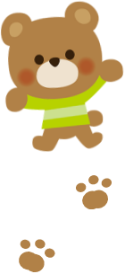
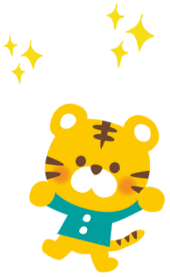
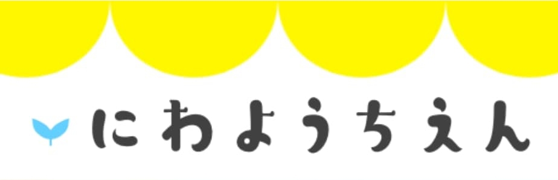

にわようちえん（架空）
ホームページ

架空の幼稚園のホームページ（トップページ）をデザインしました。
担当
トップページデザイン（PC）
期間
2日
使用アプリ
XD
サイトの目的
新年度入園児の獲得
在籍園児の保護者に向けてイベントなどの情報を発信
ターゲット
幼稚園入園予定の子どもがいる保護者
在籍園児の保護者
ペルソナ
年齢・性別：30代女性
家族構成：夫と、2歳の子どもの3人家族
居住地：東京都
参考：来年の入園を考えている。
幼稚園によって大切にしている保育方針などが異なるため、自分たちに合う園を探しています。
安心、安全、信頼と、成長できる環境を重視。親と一緒になって、子どもの成長をサポートしてもらいたいです。
アレルギーの面から、幼稚園の給食の内容も気になります。
入園後は、先生と気軽に連絡が取れる環境を希望しています。
コメント
幼稚園を検討している保護者に「安心できそう」
「この幼稚園に決めたい」と思ってもらえることを意識し、先生たちの園児に対する愛情が伝わるサイトを心がけながら制作しました。
また、子どものための幼稚園なので、明るい配色や、楽しげなキャラクター・模様なども配置しました。
トップページ
パソコン
ポイント
メインビジュアルに当たるトップの部分は、 静止画でなく動画の挿入を想定。 保護者に安心感を与えたいため、 幼稚園の雰囲気がより伝わる動画にしたいと考えました。
 
スクロールすると、動物が下から出現してくるような動きを想定しています。 子どもと一緒にサイトを見ることがある場合に、子どもを飽きさせないような仕掛けを心がけました。

子どもが対象となるので、黄色や水色といった明るくポジティブな色を使用しました。また、 幼稚園の様子が伝わるように写真を多く使用しています。
子どもがお絵かきをしたようなデザインにしました。